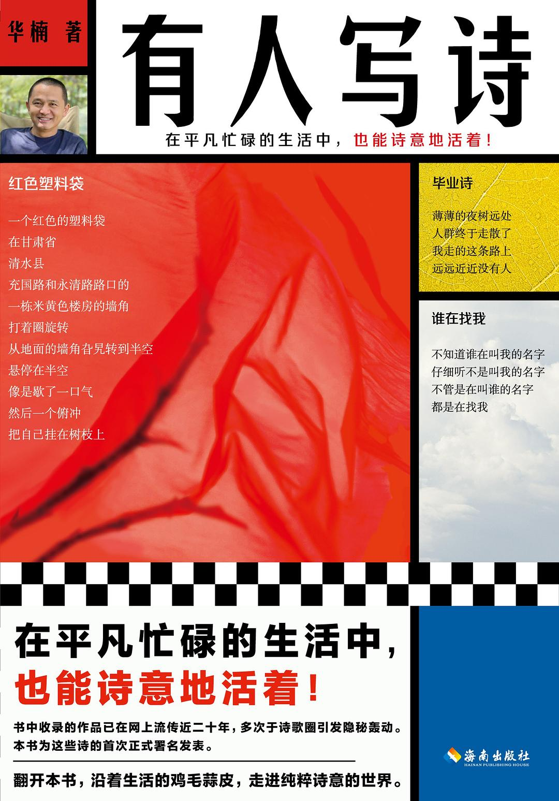

有人写诗

7.8
★★★★☆
豆瓣评分 · 3,200 人评价
知名商业领袖华楠褪去世俗光环后的诗性结集，以粗粝平实、毫无矫饰的冷峻语言，记录在商业丛林与故土瓦砾之间对于生命本真与死亡寂静的深沉叩问。
总体观点
《有人写诗》是读客文化联合创始人、著名图书出版人与品牌战略专家华楠历经数十年沉淀出版的个人诗集力作。在高度讲求实用功利、资本回报与流量算法的现代商业社会中，作者选择以最不合时宜、最纯粹赤裸的‘写诗’行为，对抗工业文明对心灵与语言的残酷规训。
华楠的诗歌打破了学院派诗人雕琢藻饰的象牙塔习气，其诗风呈现出近乎原始泥土般的粗粝感、直截了当的肉体痛感与敏锐的哲学反讽。全书从故乡豫南小镇的残垣断壁、老去的亲人与牛羊，写到大都市玻璃幕墙下现代人的精神异化与猝死焦虑，借由日常微小细节的冷酷显微，在喧嚣人世间构筑起一座容纳灵魂安息的精神避难所。
核心观点
-
1. 反修辞的纯粹真实：用刀刻般的白描剥离矫饰
坚决拒绝抒情诗的软弱感伤与浮夸比喻，以短促坚硬的日常口语直击事物的物质本原，产生震撼人心的原始力量。
《生铁》中写‘一块被敲打千百次的生铁，扔进水里发出刺啦一声白烟，那就是我一天的全部回答’，冷峻如铁石。 -
2. 豫南乡村的消逝与回不去的精神母体
在城镇化推土机的隆隆轰鸣中，古老的农耕伦理与故乡草木逐渐沦为瓦砾记忆，成为游子心头永远无法愈合的隐痛。
《祖母的棉被》中细致刻画落满灰尘的发黄旧被套，针脚里缝进了大地的寒凉与亲人消逝在风中的衰老叹息。 -
3. 商业丛林中的异化审视与自我警惕
身处造神与造梦的商业巨浪前沿，作者保持着难得的清醒自省，时刻警惕资本游戏对个体真实知觉的吞噬。
《会议室》中描绘长桌两侧西装革履的名流们口吐专业术语，而窗外的麻雀正衔着草茎飞过天际，形成鲜明反讽。 -
4. 肉体的衰朽与向死而生的坦然凝视
将目光投向疾病、衰老、伤口与死亡，在不可抗拒的生理退化面前不作哀怨呻吟，而是以平静笔调接纳生命的自然节律。
《骨骼》中写到‘骨头在皮肤下面沉默地支撑着体重，直到有一天泥土把它重新收回，像归还一把借来的锄头’。 -
5. 写诗作为对抗平庸的最后尊严武器
当所有的成功、金钱与喧嚣化为过眼云烟，诗歌成为个体在虚无宇宙中刻划存在痕迹的唯一神圣仪式。
‘在这个人人忙着变现的世界上，总得有人写诗，就像在废弃矿井深处，总得有人点亮一盏微弱的矿灯。’
全书结构
-
泥土与骨骼：故乡原野上的草木低语
收录描写豫南故土、童年农耕记忆与亲人老去的抒情篇章，以朴质语言捕捉泥土深处的生死轮回。
诗人蹲在故乡田埂上注视一株枯萎的玉米秆，在寒风中听见先辈骨殖在冻土层下沉睡的微弱呼吸声。 -
玻璃之城：写字楼与商战缝隙里的幽光
聚焦现代大都市的写字楼、会议室、机场候机厅等冷色调空间，剖析现代人在财富追逐中的精神空洞与自省。
午夜在虹桥机场延误的长椅上写下短句，登机口的荧光屏映照着疲惫的面容，在喧闹中独享诗意的孤独。 -
肉身受戒：疾病、衰老与时间的刻痕
直面中年肉体的磨损、医院长廊的消毒水气息与衰老现实，用冰冷的显微镜笔法解剖生命的脆弱真相。
静脉滴注的药水一滴一滴砸落，秒针走动的节拍在空旷病房里被放大为不可逾越的命运战鼓。 -
词语的矿灯：在虚无中打捞不朽的火种
沉思诗歌、语言与文学创造本身的哲学价值，宣告在流水线商品时代坚守独立思想与诗性尊严的崇高誓约。
合上笔记本的瞬间黑夜退去，清晨第一缕阳光洒在粗糙的纸页上，如同荒原上破土而出的新绿。